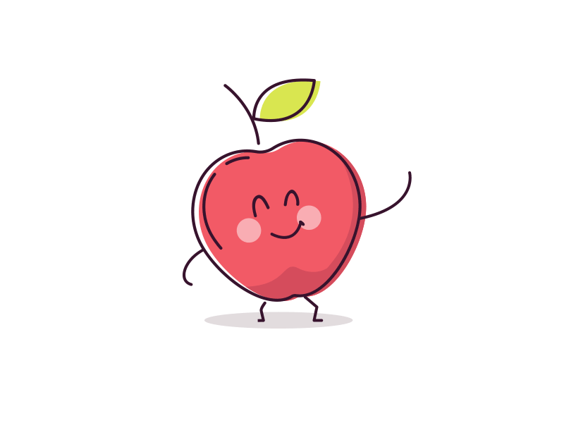

Quitanda do Zé
Principal
Quem somos
Estoque
Buscar

üöß Desenvolvedores em obra! üöß
Lamentamos o transtorno, mas esta página ainda está em construção.
Estamos trabalhando para trazer a você conteúdo incrível em breve!
Voltar para página inicial